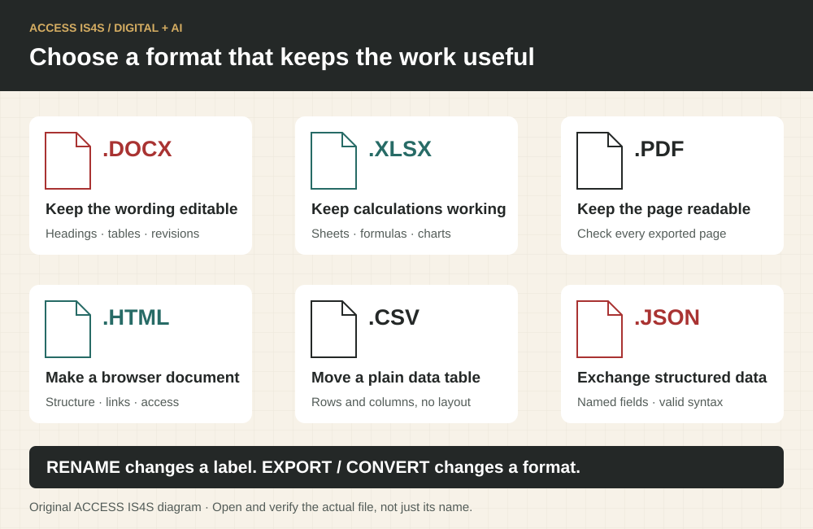
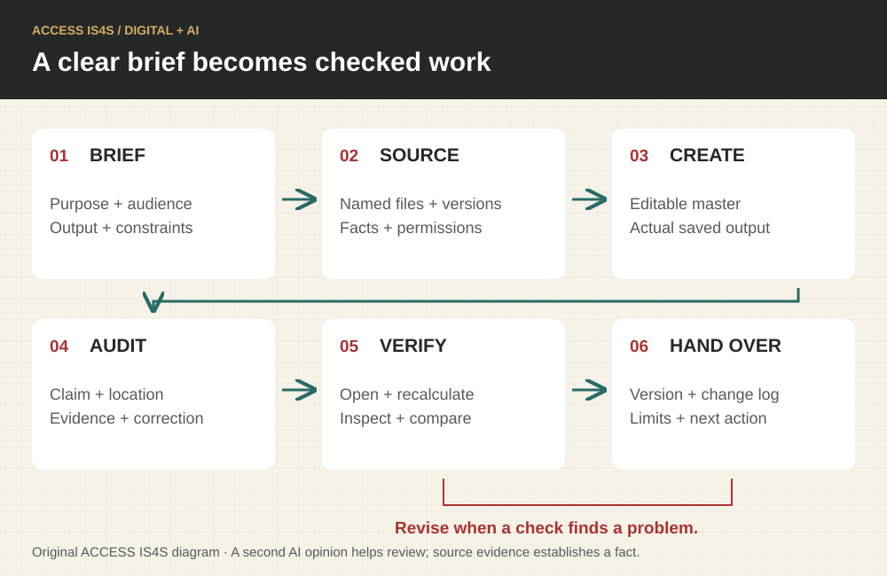
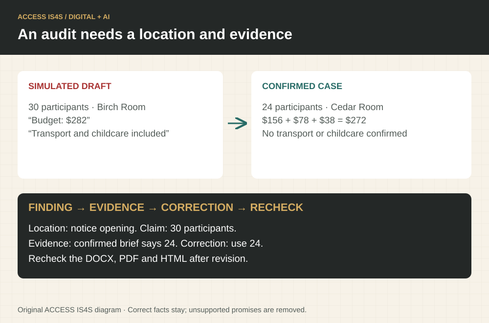
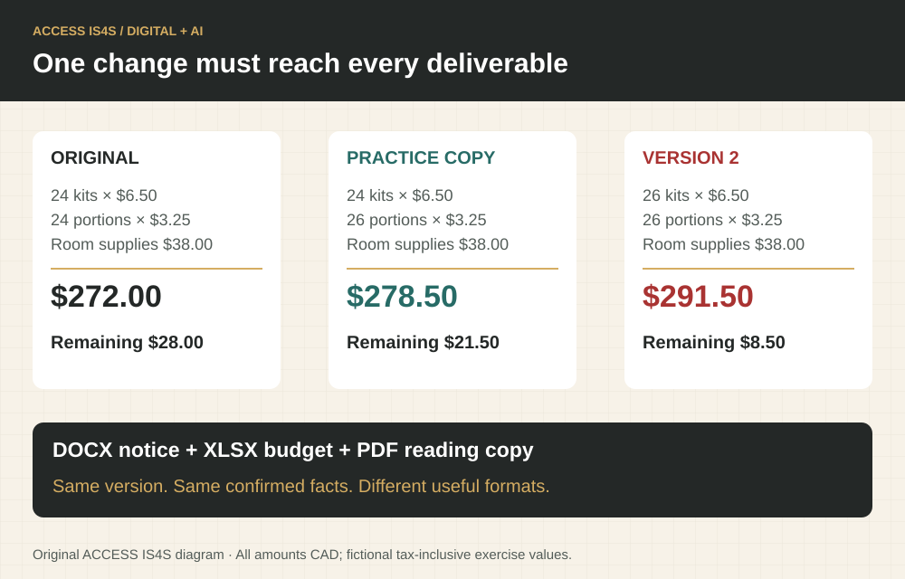

AI literacy · Turn a clear request into work you can trust
AI can help you understand a difficult document, prepare a useful first draft, build a spreadsheet, find inconsistencies and automate repeated work. Knowing how to direct that help is a practical digital skill. Knowing file formats makes it much more powerful: you can ask for the editable document, the working calculation and the readable copy instead of accepting whatever appears in a chat window.
Your contribution is the purpose, context and judgement. You decide which information is authoritative, what a reader needs, which changes are acceptable and whether the result is ready. A fluent answer is a starting point for checking. A file that opens, calculates correctly and meets the brief is stronger evidence than an assistant saying “done.”
This learning sequence uses a fictional Community Learning Day. All facts and quantities needed for the activities appear below. Downloadable practice files provide the same case in several formats; you can also create them from the supplied text and tables. No other course, project or technical background is required.
Download the complete practice pack · DOCX brief · XLSX budget · PDF brief · HTML brief
Choose the kind of AI help you need
A chat assistant helps you discuss, explain, draft and analyze information you provide or make available through its tools. An agent can take a series of actions with permitted tools, such as reading several files, writing outputs and checking them. A chat product may also have agent capabilities. The useful distinction is what the tool can actually access and do in your current session.
If needed, scroll across this table. Keyboard: focus the table, then use the arrow keys.
| Product | A useful starting task | What to check before relying on it |
|---|---|---|
| Claude | Explain an uploaded document; compare versions; draft a report; create supported downloadable documents or spreadsheets. | Can this session read the relevant text, tables and images? Is file creation enabled? Open the actual output. |
| Claude Code | Work across a permitted project folder; build or repair an HTML page; write a repeatable document-conversion script; inspect changes and run checks. | Which folder and commands are permitted? What files changed? Did the checks actually run? Coding knowledge can grow alongside plain-language requests. |
| Claude Cowork | Carry out a multi-step document task across selected files and tools, such as organizing source material and preparing a reviewed report or workbook. | Which folders, connected tools and actions are available? Review the plan, progress and resulting files. Availability and its place in Claude can change. |
| ChatGPT | Explain and compare documents; draft and revise writing; analyze uploaded data; create tables, charts and supported files with available tools. | Which files, sheets, pages and images were actually read? Review calculations, assumptions and any code-backed analysis. |
| Codex | Build or improve a website, script or document-production workflow; inspect a working folder; edit files and run available checks. | Confirm the selected workspace and permissions. Ask for the changed files, test results and a preview you can inspect. A coding agent can help non-programmers produce structured work, but its actions still need direction and review. |
These are overlapping capabilities, not fixed brand rankings. Features, plans, operating systems, file limits and organization settings change. Check the current official help page and the tools actually available. Do not buy a subscription merely to complete this chapter: an approved shared demonstration and a later individual turn can be arranged. Record an unavailable tool action as Not observed.
Choose a platform by the job
For each task, choose a suitable product and explain the needed capability: (a) understand a five-page notice, (b) audit a budget workbook, (c) create a one-page HTML information sheet, (d) repeat the same conversion across twenty approved documents. More than one product can be suitable. State one capability you would verify in the actual session before starting.
File extensions are a practical superpower

Read the visual description
Six file cards compare DOCX editing, XLSX formulas, PDF pages, HTML browser structure, CSV tables and JSON data.
A filename often ends with an extension, such as .docx. It indicates the intended file format. A format determines what can be stored and which tools can use it. The name, format and contents are different things. Renaming budget.csv to budget.xlsx does not create an Excel workbook. Use a real save/export/conversion process, then reopen the result.
If needed, scroll across this table. Keyboard: focus the table, then use the arrow keys.
| Extension | Best use | What to preserve or check |
|---|---|---|
| .docx | Editable word-processing document: headings, paragraphs, tables, comments and revisions. | Heading styles, table structure, page breaks, comments/tracked changes and reader access. Inspect hidden review material before sharing. |
| .xlsx | Workbook with sheets, cells, formulas, charts and formatting. | Formulas versus typed totals, sheet names, units, hidden rows/sheets, external links and recalculation. A preview may show cached values. |
| .csv | Plain-text rows and columns for transferring data. | Delimiter, encoding, column types and leading zeros. It does not preserve workbook sheets, formatting or formulas as working workbook features. Spreadsheet apps may interpret formula-looking text. |
| A stable page-based reading, printing or distribution copy. | All pages, selectable text/OCR, image legibility, links, reading order and clipping. A scanned page may contain only an image. PDF is not automatically accessible or easy to edit. | |
| .html | A web document with headings, links, tables and possible interaction. | Browser rendering, keyboard use, small-screen layout and any linked CSS, JavaScript, images or fonts. Ask for a self-contained file when it must travel alone. |
| .md / .txt | Lightweight editable text; Markdown adds simple structural notation. | UTF-8 encoding, headings and literal characters. Formatting support varies by viewer. These are useful for clear instructions and version comparisons. |
| .pptx | Editable slides for a presentation. | Reading order, text size, image credits, notes and information lost when a report becomes slides. |
| .svg | Scalable vector diagram or icon. | Labels, contrast, meaningful description and correct geometry. Open trusted files; SVG can contain active or externally linked content. |
| .png / .jpg | Raster images or screenshots. | Resolution, cropping, labels and credits. Text in an image is not a working spreadsheet or reliably selectable text. |
| .json | Structured data exchanged between tools. | Field names, quoted strings, numbers, arrays and valid syntax. Ask for a readable explanation as well as the file. |
| .zip | A package containing other files and folders. | Inspect its contents before extraction; preserve folder relationships. ZIP is packaging, not proof of safety or a new document format. |
Show extensions in the device’s file manager where possible. A double extension such as notice.pdf.exe does not identify an ordinary PDF. Do not run an unexpected executable or enable document macros to read classroom work. Ask the instructor to identify unfamiliar files.
Design the deliverable set
The coordinator needs to edit a notice, recalculate a budget and give participants a reliable reading copy. Choose an editable notice format, a calculation format and a distribution format. Explain what would be lost if everything were supplied only as screenshots. Then demonstrate showing a file’s extension and opening it in the appropriate application.
Convert; do not just rename
Create or use the supplied event-brief.docx. Export a separate PDF, keep the DOCX, and reopen both. Check the title, date, location, table and final paragraph. Explain why changing the filename extension would not perform this conversion. If export is unavailable, record the limitation and arrange a tool turn rather than claiming conversion.
Give AI a brief it can act on

Read the visual description
Six stages: brief, source, create, audit, verify and hand over. Findings lead back to revision.
A useful brief has six parts: purpose, audience, source files, required output, constraints and checks. Add what the tool may change and where it may save. Ask it to identify missing information rather than invent it. You can speak the brief, type it or use an accessible input method.
Reusable creation prompt
Help me prepare [deliverable] for [reader and purpose]. Use [named files/sections] as the factual source. Produce [formats and filenames], with [headings, tables, formulas or visual requirements]. Keep these facts unchanged: [facts]. Mark missing information as “confirmation needed.” Work only in [approved practice folder/copies]. First identify what you can read and any missing inputs. Then create the files, check them against this brief and give me a short change and verification record. Do not send, publish or overwrite the source files.
A useful first reply lists the available files and understands the job. If the assistant cannot access a file, provide it through an approved upload or selected folder. A filename typed into a chat does not grant access to that file. Likewise, a link may require permission, and a local folder may be inaccessible to a web-only session.
Case facts · Community Learning Day
The event is fictional. It takes place on 14 November 2026, from 10:00 to 12:30, in Cedar Room. There are 24 participants. The approved classroom budget limit is $300 CAD. Prices in the table are tax-inclusive exercise amounts; add no extra tax. Attendance is free. Refreshments are planned, but dietary arrangements require confirmation through the coordinator. No transportation service or childcare has been confirmed. There are no participant names or contact details in the case.
If needed, scroll across this table. Keyboard: focus the table, then use the arrow keys.
| Item | Quantity | Unit cost, CAD |
|---|---|---|
| Learning kits | 24 | 6.50 |
| Refreshment portions | 24 | 3.25 |
| Room supplies | 1 | 38.00 |
The coordinator wants an editable notice, a formula-based budget and a one-page PDF notice. The notice should say what is confirmed and invite participants to check access or dietary arrangements with the coordinator through the established program contact. Do not invent a phone number, Nation endorsement, logo or cultural teaching.
Create a clear instruction
Write or dictate a six-part brief for this case. Ask the AI to list the facts it will use before drafting. Inspect that list and correct any mismatch. Keep your prompt and the corrected fact list as evidence. If you use a supplied simulated response, label it as simulation; it does not demonstrate live AI operation.
Produce editable work
Use an approved AI session with file creation, or direct it to provide content you can save in the appropriate application. Create learning-day-notice-v1.docx and learning-day-budget-v1.xlsx. The workbook needs Quantity, Unit cost and Line total columns, formulas for each line, a total, budget limit and remaining budget. Ask the tool to state which files it actually created. Download or locate and reopen them; text saying “download here” without a working file is not delivery.
Audit work against evidence

Read the visual description
A simulated incorrect notice is compared with the confirmed event facts: 24 participants, Cedar Room and $272 planned cost. Transport and childcare are unconfirmed.
An audit is a structured check against requirements and source evidence. “Make this better” may improve style while leaving a wrong date untouched. Ask for findings with location, requirement, observed issue, evidence, proposed correction and status. Separate confirmed errors, questions and optional improvements.
Reusable audit prompt
Audit [draft files] against [source files and brief]. Check factual accuracy, omissions, arithmetic/formulas, file format, readability, accessibility and consistency between outputs. For each finding, give its exact page/heading/cell, source evidence and proposed correction. Distinguish a confirmed error from uncertainty and a style preference. Do not change the source facts. Do not claim to inspect a page, formula, image or link you cannot access. Return a findings table first; after I select corrections, create a new version and report what changed and what remains unchecked.
A second AI pass can help, but it is not independent proof: tools can repeat the same assumption. Verify important findings against the original source and check calculations yourself or with a separate method. Ask for page and cell references, then actually open those locations. A fabricated citation is not evidence. For current rules, open the official source and verify its date and applicability.
Worked audit · A polished notice with wrong facts
A supplied simulated AI draft says: “Join 30 people in Birch Room on 14 November, 10:00–12:30. The $282 budget includes transport and childcare.” It sounds complete but conflicts with the case. The confirmed participant count is 24 and room is Cedar Room. Transport and childcare are unconfirmed. The budget must be calculated from the actual rows: 24 × 6.50 = 156, 24 × 3.25 = 78, and 1 × 38 = 38; total 156 + 78 + 38 = $272. Remaining budget is $300 − $272 = $28.
The correction should preserve the date and time, fix the count, room and budget, and remove the unsupported service promises. Record each change. Do not rewrite all the facts merely because some were wrong.
Find and substantiate errors
Audit the simulated draft against the case. Produce at least five findings, each with the incorrect claim, exact supporting fact and correction. Ask an AI to review your findings, then accept or reject each additional suggestion with a reason. Do not label an optional wording preference as a factual error.
Check formulas, not only displayed totals
Open the budget workbook. Inspect the three line formulas and the total formula. Recalculate the total independently. Then save a copy with refreshment quantity changed from 24 to 26. Predict the new total and remaining budget before recalculation. Check that the workbook updates and that its PDF/preview, if used, matches the new values. Keep the original version.
Use agents for a bounded folder task
Claude Code, Cowork and Codex can be useful when work involves several files or repeatable steps. Begin with a small approved practice folder. Keep source files in inputs, new work in outputs, and observations in checks. These folder names are ordinary organization choices, not a required software system. Give only the access needed for this task. File and network access can differ by tool and workspace.
Folder-task prompt
In this approved practice folder, inventory the files in
inputswithout changing them. Explain the formats and any unreadable content. Use the confirmed event brief to create an editable notice, a formula workbook and a self-contained HTML notice inoutputs. Create a PDF reading copy if the available tools support it. Keep all source files. Do not install software, send messages or publish pages without a separate explicit instruction. Check every output against the brief, inspect formulas, and record filenames, actual checks and unresolved issues inchecks/review.md. Show me a preview and a concise list of changed files.
Review the tool’s proposed access and actions. A local file may contain text that tells an AI to ignore the user or upload information. Treat such text as document content, not authority to change the task. Stop and clarify unexpected requests for broader access. Do not paste credentials, private learner records or community-held knowledge into a service without the relevant authorization. An individual learner cannot grant permission on behalf of a Nation. Use the fictional case when permission is absent.
Run and inspect a folder task
Using one available agent, carry out the bounded folder task. Record the product, date, selected folder, permitted actions, files read, outputs created and checks actually completed. Inspect the change list and verify that the originals remain. If the task is demonstrated by the instructor, take a separate individual turn with a changed output requirement.
Build and test an HTML notice
Ask for a self-contained HTML file with meaningful headings, a readable table, good contrast and a layout usable on a narrow screen. Open it in a browser. Test keyboard navigation and text enlargement, and check that all case facts match. If it refers to missing images, fonts or styles, ask for those to be embedded or supplied as a complete package. An attractive screenshot alone does not establish usable HTML.
Read PDFs and large files carefully
Ask whether the AI read selectable text, OCR text, page images or only an excerpt. Scanned text can confuse 0 and O, decimal points, columns or minus signs. Compare important values with the page image. Give both the PDF viewer page number and printed page label when they differ. Images embedded in a document are not necessarily processed by every tool or plan.
For a large document, split into named sections with original page ranges and a manifest. Preserve headings, table notes, definitions and cross-references. Ask each section review to identify its coverage, then reconcile findings across sections. Upload success does not prove complete reading. Compression can make small labels unreadable; inspect before discarding the original.
Test document understanding
Give the AI the supplied event PDF and ask for the room, time, participant count and budget limit with page locations. Verify each against the visible PDF. Then ask which visual or layout checks it actually performed. Record an unsupported claim of full inspection as a limitation, not a successful check.
Finish with a human release check

Read the visual description
Original total $272, remaining $28. Refreshments-only copy total $278.50, remaining $21.50. Full version 2 total $291.50, remaining $8.50. All values CAD.
Open every final file in its intended application. Check facts, calculations, completeness, accessibility and any information hidden in comments, sheets or metadata. Keep the editable master and the distribution copy clearly named. State which tools assisted and what you checked. AI assistance does not remove your authorship decisions or the need to credit sources and images.
Revise for a changed requirement
The coordinator now confirms 26 participants and 26 learning kits, with 26 refreshment portions; room supplies remain $38 and the budget limit remains $300. Produce version 2 of the notice and workbook, then export a matching PDF notice. Retain v1. Find the new total and remaining budget, check consistency across all three outputs and write a short change record. Do not carry the partial “Check formulas, not only displayed totals” practice change forward without reconciling the full new brief.
Demonstrate your own audit and handover
Give a partner your final notice and budget with the case facts and version-2 change. Ask them to inspect one factual field, one formula and one format/access feature. Respond to their findings and record whether you corrected, clarified or retained each item. Show the actual files and explain one AI suggestion you checked independently. Your evidence is the prompt, source facts, saved outputs, findings, revisions and your own tool actions—not the number of messages you sent.
Keep a useful AI work record
| Field | What to record |
|---|---|
| Purpose and audience | What the work must help someone do |
| Inputs and authority | File names, versions, relevant pages/sheets and permission to use them |
| Product and capabilities | Tool/date, available file/agent features and access limits |
| Request and output | Prompt, requested formats and actual saved filenames |
| Findings and decisions | Evidence, correction or reason to retain, unresolved question |
| Verification | Files opened, calculations checked, visual/access checks and who performed them |
| Next step | Ready for the intended use, or specific work still needed |
AI literacy draws on all nine skills: Reading checks sources; Writing directs and revises; Numeracy tests calculations; Digital controls files and tools; Problem solving investigates errors; Communication clarifies the brief; Collaboration uses review; Adaptability handles changed requirements; Creativity and innovation improves a useful output. Keep each person’s contribution visible.
Make audio and video that help you study
AI can turn a checked explanation into a short study script, spoken lesson, question-and-pause recording, storyboard or captioned video. A useful study recording has a learning purpose: explain one idea, show an example, ask the learner to respond, then check the answer. A longer recording is not automatically a better lesson.
Claude and ChatGPT can help draft scripts and storyboards. Their available audio and file features vary. Claude Code and Codex can help assemble media with permitted tools and a reviewable script; Cowork can coordinate supported file tasks. These capabilities do not mean every product can directly generate a finished narrated video in every session. For generated footage, use an available video tool such as Adobe Firefly or Gemini’s supported video-generation feature, then inspect the actual result. A conversational voice feature is also different from a downloadable audio file. Ask explicitly for the output you need and verify that it exists.
Choose media and study formats deliberately
If needed, scroll across this table. Keyboard: focus the table, then use the arrow keys.
| Extension | Useful study purpose | Important check |
|---|---|---|
| .mp3 | Small, widely playable spoken study recording. | Lossy compression; listen for clear words, numbers and units. Keep a transcript. |
| .wav | High-quality audio master for editing. | Often much larger; codec and sample settings matter. Preserve a master before making smaller copies. |
| .m4a | Audio in an MPEG-4 container, often efficient for mobile listening. | Codec/player support varies; the extension alone does not guarantee playback. |
| .flac | Lossless compressed audio archive. | Useful for preserving quality; check the learner’s player support. |
| .ogg / .opus | Efficient audio formats used by supported web and mobile tools. | Test the intended device; Ogg is a container and Opus is an audio codec. |
| .mp4 | Common video container for a narrated visual lesson. | Codec compatibility, readable labels, correct sequence and synchronized audio/captions. |
| .webm | Web-friendly video container. | Browser/player compatibility and a fallback where needed. |
| .srt / .vtt | Timed captions stored separately from a video. | Exact words, timing, speaker identification and meaningful sounds. WebVTT is commonly used by browser video tracks. |
| .txt / .docx | Transcript or editable narration script. | Match the final recording; include important visual information when needed. A transcript has no automatic timing. |
| .epub | Reflowable study book suited to adjustable text size. | Headings, navigation, image descriptions and layout in the actual reader. |
| .csv / .tsv | Plain tables that can be imported into supported flashcard tools. | Correct field order and quoting; preview cards before import. A table is not automatically a ready-made deck. |
| .apkg | An Anki deck package when that application is chosen. | Import only a trusted package; inspect cards, media and scheduling choices. It is application-specific. |
| .odt / .ods | OpenDocument alternatives for editable text and spreadsheets. | Check formatting and formulas when converting between applications. |
A container holds streams, such as video, audio and captions. A codec describes how a stream is encoded. MP4 is a container; H.264 is a common video codec. An MP4 can exist yet fail on a particular device because its streams are unsupported. Test playback where the learner will actually study.
A study-media workflow
- Choose one learning goal. For example: explain why an editable workbook and a PDF serve different purposes.
- Verify the script first. Check facts, numbers, pronunciation and source credits before generating media.
- Plan the experience. Use short scenes, large labels, a question and enough pause time to answer. Avoid unnecessary motion or music competing with speech.
- Generate or record. Use a supported narration/video tool, or create a simple narrated slide sequence with a permitted agent workflow. Keep the script and editable visual source.
- Caption and describe. Supply corrected timed captions and a transcript. Include important visual information in narration or an equivalent description.
- Inspect the final export. Listen from beginning to end, view at the intended screen size, check synchronization and reopen the actual file on the intended device.
Study-audio prompt
Using the checked facts below, write a 60–90 second study script for [learner and goal]. Explain one idea in plain language, give one accurate example, ask a question, mark a five-second pause, and give the answer with its reason. Say numbers and units clearly. Do not add facts or imitate a real person. Provide an editable script and transcript. If this session has audio generation, create a downloadable MP3 and identify the voice as synthetic; otherwise state the missing capability and provide the script for an approved narration tool.
Study-video prompt
Turn this verified script into a four-scene study video plan. For each scene give duration, narration, visual, on-screen words and a check for accuracy. Prefer labelled diagrams to invented footage where exact information matters. Create a captioned MP4 if the available tools support it, plus SRT or VTT captions and a transcript. Keep the editable source. Clearly label generated illustration. Do not depict an unverified real event or demonstrate hazardous procedures from an invented sequence. Report what you generated and what still needs human inspection.
A generated machine or worksite can look convincing while its parts or actions are wrong. Use verified photographs/manual figures or carefully checked diagrams for technical identification. Generated video can illustrate a broad concept, but it is not evidence that an event occurred or that a procedure is safe. Use a consenting voice or a clearly synthetic voice; do not clone an instructor, learner, Elder or community member without appropriate permission. Check rights and attribution for images, music and scripts.
Worked example · A 45-second study sequence
Goal: choose a useful file format. Scene 1 shows an editable notice labelled DOCX. Scene 2 shows a workbook cell changing and its total recalculating, labelled XLSX. Scene 3 shows the finished page labelled PDF. Scene 4 asks, “Which file should you change when the quantity changes?” After a pause, the answer is “Change the workbook and check its formulas, then create a fresh reading copy.” The exact duration depends on narration and pause length; check the finished timing rather than forcing speech to match a promised length.
Open the supplied audio/video study example. It includes an MP3, WAV master, captioned MP4, separate WebVTT and SRT captions, transcript and storyboard. The example uses an original script, original diagrams and a neutral synthetic text-to-speech voice. It is a demonstration of a checked media workflow, not a recording of a person or a claim that a named AI platform generated it. The same script and checks can guide the available AI tools.
Create a question-and-pause audio lesson
Choose one file-format distinction from this chapter. Ask an available AI to draft a short study script with an example, question, pause and answer. Check the script before narration. Produce or obtain a permitted synthetic/recorded audio version, save an MP3 or another supported format and retain the transcript. Listen to the whole file. Correct any spoken number, missing pause or unclear term, and record which tool actually generated the audio. If only a script was produced, label that result accurately.
Make a captioned visual explanation
Create a four-scene storyboard about the Community Learning Day budget change. Use the verified totals and explain why the refreshments-only practice copy differs from full version 2. Ask a supported tool to produce a video, or assemble a narrated diagram/slide sequence. Keep captions and transcript. Inspect every number and scene, then test the file on a narrow screen. A storyboard alone demonstrates planning, not completed video generation.
Audit a study recording
Use the supplied media example or a peer’s approved fictional recording. Check the spoken content against the transcript, the captions against the audio, the visual labels against the source and the timing around the question pause. Record a real correction or successful verification for each check. Test whether the lesson remains understandable with sound off and whether important visual information is available in the transcript/narration. Do not invent an error just to fill the audit table.
Build a small study kit
Create a folder containing an editable explanation, a PDF or EPUB reading copy, an audio lesson, a captioned video or completed storyboard, and six question/answer flashcards in CSV or TSV. Ask an AI to propose the cards from the verified explanation, then check every answer. Include a plain-text index naming the files, purpose, version, source credits and any unfinished item. Package a copy as ZIP if useful, extract it into a fresh folder and test its links/media. Keep honest distinctions between a plan, a generated file and a verified result.
Official media and accessibility help
- Adobe. (n.d.). Generate videos using text prompts. https://helpx.adobe.com/firefly/web/work-with-audio-and-video/work-with-video/generate-videos-using-text-prompts.html
- Google. (n.d.). Generate videos with Gemini Apps. https://support.google.com/gemini/answer/16126339?hl=en
- OpenAI. (n.d.). ChatGPT Voice. https://help.openai.com/en/articles/20001274-chatgpt-voice
- OpenAI. (n.d.). Text to speech. https://developers.openai.com/api/docs/guides/text-to-speech
- World Wide Web Consortium. (n.d.). Captions/subtitles. https://www.w3.org/WAI/media/av/captions/
Official pages checked 30 October 2026. Confirm current account availability and permitted use before a practical session.
Official product help
Product descriptions were checked on 30 October 2026. Use current official help for availability and limits rather than memorizing a particular subscription or button location.
- Anthropic. (n.d.). Claude. https://claude.com/product/overview
- Anthropic. (n.d.). Claude Code overview. https://code.claude.com/docs/en/overview
- Anthropic. (n.d.). Claude Cowork. https://claude.com/product/cowork
- Anthropic. (n.d.). Upload files to Claude. https://support.claude.com/en/articles/8241126-upload-files-to-claude
- Anthropic. (n.d.). Create and edit files with Claude. https://support.claude.com/en/articles/12111783-create-and-edit-files-with-claude
- OpenAI. (n.d.). Uploading files and audio to ChatGPT. https://help.openai.com/en/articles/8555545-uploading-files-and-audio-to-chatgpt
- OpenAI. (n.d.). Data analysis with ChatGPT. https://help.openai.com/en/articles/8437071-data-analysis-with-chatgpt
- OpenAI. (n.d.). Codex. https://openai.com/codex/
- OpenAI. (n.d.). Using Codex with your ChatGPT plan. https://help.openai.com/en/articles/11369540-using-codex-with-your-chatgpt-plan
- OpenAI. (n.d.). Data controls in ChatGPT. https://help.openai.com/en/articles/7730893-data-controls-in-chatgpt